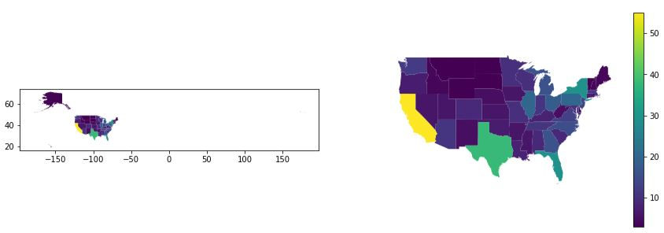
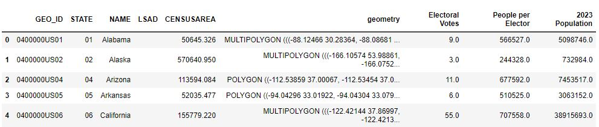
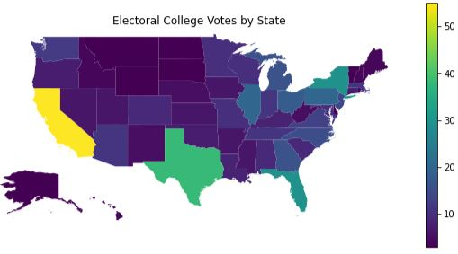
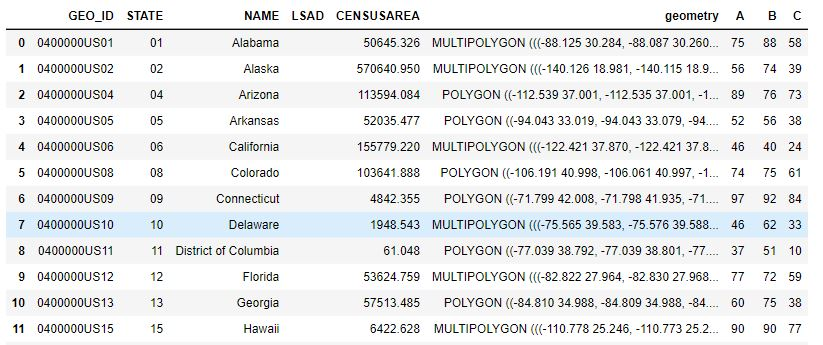
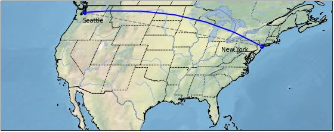

Geospatial Plots#
Geospatial plots are great at:
Showing how an area is impacted relative to other areas.
Revealing which area is impacted.
Illustrateing a pattern in the location of something.
Geospatial plots are NOT good at:
Showing how one value correlates to another. (Use a line plot for this)
Emphasizing the amount of difference between one area and another.
Contiguous States Only#
Let’s start off by showing the benefits of showing only the contiguous United States. Imagine that we are trying to show which states have the most electoral college votes and perhaps we want to emphasize that California has the most by a long shot.
One the left, we see what many students show–the full 50 states.
One the right, is a much improved image showing only the 48 contiguous states.

fig, (ax1, ax2) = plt.subplots(1,2, figsize=(15,5))
# Left Side: Plot the entire United States
gdf.plot(ax=ax1, column='Electoral Votes')
# Right Side: Plot the contiguous US with a legend
gdf.plot(ax=ax2, column='Electoral Votes', legend=True)
ax2.axis('off') # remove the box and the x,y ticks
# Set the extent of the axes to cut off Alaska and Hawaii
ax2.set_xlim(-130, -65)
ax2.set_ylim(24, 50)
This data is a merge of two different data sources: electoral_college.csv and a ShapeFile of the United States. You’ll note that in the code we were able to read column values "707,558" (a string with a literal comma as the thousands separator), by using the named parameter thousands in the read_csv call. Handy!! We also eliminated a duplicate column using drop.

electoral = pd.read_csv('electoral_college.csv', thousands=',')
gdf = us_states.merge(electoral, left_on='NAME', right_on='State', how='left')
gdf = gdf.drop(columns='State') # this is a duplicate of 'NAME'
In this example, we have two geospatial in one figure where there are just three differences.
The box and ticks are hidden
We clip off Alaska & Hawaii
We show a legend
By hiding Alaska and Hawaii, we can bring a much greater focus on the states. Providing a legend is very helpful. And, eliminating the box with longitude and latitude ticks removes an unnecessary distraction since we really don’t care about the lat/long.
In the chart on the right, we can easily see that California is large and brilliant yellow which ephasizes its impact.
There are two ways to hide these states. One way is to eliminate them from the GeoDataFrame:
gdf = gdf[(gdf['NAME'] != 'Alaska') & (gdf['NAME'] != 'Hawaii')]
Another way is to set some limits on the x & y axes: ax2.set_xlim(-130, -65)
Inset Alaska & Hawaii#
Eliminating two states from the drawing isn’t so great. We’d like to show Alaska and Hawaii like other maps do using an inset. This can be done, but it does get complicated rather quickly. The inset is a separate plot with separate arguments. When legends are shown, the size of the figure changes and the placement of the inset changes. I provide this code because it is educational to see and play with, but I recommend the method below this.
Inset Image and Complicated Code

def draw_us_inset(gdf, **args):
# Create a new figure and axes for the main plot
fig, ax = plt.subplots(1, figsize=(12,5))
# Plot the entire United States
gdf.plot(ax=ax, **args)
# Set the extent of the main plot to cut off Alaska & Hawaii
ax.set_xlim(-130, -65)
ax.set_ylim(23, 50)
# helper method to plot both insets without a border, no legend, correct vmin/vmax
def inset(position, name, xlim=None):
'''
position = a list: [x, y, width, height] in % of figure size
'''
ax = fig.add_axes(position)
state = gdf[gdf['NAME'] == name]
args_no_legend = args
args_no_legend['legend'] = False
# The new plot for the inset needs to have the vmin/vmax set to the same
# values as the main plot so the colors show correctly
if 'column' in args:
args_no_legend['vmin'] = gdf[args['column']].min()
args_no_legend['vmax'] = gdf[args['column']].max()
state.plot(ax=ax, **args_no_legend)
# remove box around inset in 1-line comprehension
[ ax.spines[side].set_visible(False) for side in ['top', 'bottom', 'left', 'right'] ]
# clip our inset if needed
if xlim:
ax.set_xlim(xlim)
ax.set_xticks([])
ax.set_yticks([])
inset([0.20, 0.20, 0.20, 0.20], 'Alaska', xlim=(-180, -130))
inset([0.37, 0.19, 0.05, 0.15], 'Hawaii')
draw_us_inset(gdf, column='Electoral Votes')
Modified Geometry#
It becomes much easier to deal with plotting the full United States if the GeoDataFrame’s geometry is modified to put Alaska and Hawaii in the “right” spot. The only drawbacks are:
If you do geospatial
sjoins, then it’ll all get messed up geographically.If you want to illustrate something on the Pacific Ocean, there are states in the way!

from shapely.affinity import translate
from shapely.affinity import scale
from shapely.geometry import MultiPolygon
def modify_geometry(gdf, name_col='NAME'):
'''
Changes, in place, the geometry of Alaska & Hawaii in the GeoDataFrame to be "inset"
name is the column that contains the name of the state.
'''
def scale_translate(state_name, ratio=1.0, offset=(0,0)):
# get the geometry and save the index value using the walrus operator
multi_poly = gdf.loc[(index:=gdf[gdf[name_col] == state_name].index[0]), 'geometry']
# scale each polygon in the state's multi-polygon in both x & y direction
multi_poly = MultiPolygon([scale(poly, ratio, ratio) for poly in multi_poly])
# move the state by the offset values
multi_poly = translate(multi_poly, xoff=offset[0], yoff=offset[1])
# set the value using the 'at' method because 'loc' won't work
gdf.at[index, 'geometry'] = multi_poly
scale_translate('Alaska', ratio=0.35, offset=(26,-35))
scale_translate('Hawaii', offset=(45, 5))
def plot_votes(gdf):
fig, ax = plt.subplots(1, figsize=(10,5))
# Plot the entire United States
gdf.plot(ax=ax, column='Electoral Votes', legend=True)
# remove the box and the x,y ticks
ax.axis('off')
# Set the extent of the main plot to cut off Alaska's long tail of regions
ax.set_xlim(-130, -65)
# without this limit, we get Alaska's tail looking like it's part of Hawaii
# It's better just to eliminate that portion of the plot
ax.set_ylim(24, 50)
plt.title('Electoral College Votes by State')
# Call the methods above to generate the plot using modified geometry
modify_geometry(gdf)
plot_votes(gdf)
This data is a merge of two different data sources: electoral_college.csv and a ShapeFile of the United States. You’ll note that in the code we were able to read column values "707,558" (a string with a literal comma as the thousands separator), by using the named parameter thousands in the read_csv call. Handy!! We also eliminated a duplicate column using drop.
electoral = pd.read_csv('electoral_college.csv', thousands=',')
gdf = us_states.merge(electoral, left_on='NAME', right_on='State', how='left')
gdf = gdf.drop(columns='State') # this is a duplicate of 'NAME'
When the geometry of the GeoDataFrame is modified, the plotting code is pretty simple and allows for further customizations without crazy code. A few points worthy of calling out:
We use a
walrusoperator (:=) to assign a sub-expression to a variable in the middle of a larger expression. This allows us to reuse the value again later on in the code. It would have been just as easy to write it with two lines of code instead of one, but… Bragging Rights!When modifying the GeoDataFrame, we used the
atmethod instead ofloc. Using loc results in an error: “ValueError: Must have equal len keys and value when setting with an iterable”.
Annotated with Table Inset#
The problem with the plot above is that it is very hard to see if there is any difference between Orgegon and Nevada; the colors are just too close! To fix that we will annotate each state with the count of the votes printed onto the state’s location.

def annotate_states(gdf, ax, value_col, not_states=None, name_col='NAME'):
# annotate the states in the list, states, with values in col_name
# Filter first so that we iterate through the rows that have the state name we want
gdf_states = gdf if not_states is None else gdf[~gdf[name_col].isin(not_states)]
for _, row in gdf_states.iterrows():
# get the location of the state from the geometry
x, y = row.geometry.centroid.x, row.geometry.centroid.y
# add the text with an xytext offset that seems right for our plots size
ax.annotate("{:.0f}".format(row[value_col]), (x, y), xytext=(-10, 0), textcoords='offset points')
def add_table_inset(fig, data):
# x, y, width, height as % of figure
ax_table = fig.add_axes([.77, .35, .15, .4])
ax_table.axis('off')
table = ax_table.table(cellText=data.values, colLabels=data.columns, cellLoc='center', loc='center')
# Adjust the font size of the table
table.auto_set_font_size(False)
table.set_fontsize(10)
table.scale(1, 1.5)
def plot_annotated_votes(gdf):
fig, ax = plt.subplots(1, figsize=(10,5))
# Plot the entire United States
# Choose the 'cool' colormap so the black text appears nicely
gdf.plot(ax=ax, column='Electoral Votes', legend=True, cmap='cool',
legend_kwds={'orientation':'horizontal'}, edgecolor='lightgray')
# remove the box and the x,y ticks
ax.axis('off')
# Set the extent of the main plot to cut off Alaska's long tail of regions
ax.set_xlim(-130, -65)
ax.set_ylim(24, 50)
plt.title('Electoral College Votes by State')
small = ['District of Columbia', 'Rhode Island', 'New Jersey', 'Delaware', 'Vermont', 'New Hampshire', 'Connecticut']
annotate_states(gdf, ax, 'Electoral Votes', not_states=small)
# Before we can show our table, we need a DataFrame the data.
# Create the data of integer values of the smaller states, sorted by state name, with abbreviations
df = gdf[gdf['NAME'].isin(small)].sort_values(by='NAME')
d = { 'State': ['CN', 'DE', 'DC', 'NH', 'NJ', 'RI', 'VT'],
'Votes': list(df['Electoral Votes'].apply(lambda n: int(n))) }
# show a table of the values for the smaller states
add_table_inset(fig, pd.DataFrame(data=d))
# Be sure we have our modified geometry before calling the code above
modify_geometry(gdf)
plot_annotated_votes(gdf)
This data is a merge of two different data sources: electoral_college.csv and a ShapeFile of the United States. You’ll note that in the code we were able to read column values "707,558" (a string with a literal comma as the thousands separator), by using the named parameter thousands in the read_csv call. Handy!! We also eliminated a duplicate column using drop.
electoral = pd.read_csv('electoral_college.csv', thousands=',')
gdf = us_states.merge(electoral, left_on='NAME', right_on='State', how='left')
gdf = gdf.drop(columns='State') # this is a duplicate of 'NAME'
We moved the legend to be horizontal, not because it was necessary, but because we can. This was accomplished by using the legend_kwds argument in the plot method. There are other ways to do this (as always).
There are several issues that we address in this plotting solution:
Problem |
Fix |
|---|---|
The black text doesn’t show up well with the default colormap. |
Change the |
The smaller states don’t have room for the text. It all gets printed on top of each other and is unreadable. |
Avoid annotating values on the states with a small geometry. We just manually do this, however, we could have used the ‘CENSUSAREA’ column to help us out with that. Doing it explicitly is good enough for us. |
The smaller states’ values get lost when not shown! |
Create an inset table that displays the values |
The dataframe of values is floating point |
Use the apply method and a lambda to convert all the values to integer. There is probably another way… there always is! |
Finding Obvious Correlations#
Is there a correlation between population and electoral votes? Does the size of a state in square miles correlate to the number of electoral votes? Geospatial provides only minimal insight; a scatter plot is better.
One the top-left, you’ll see a plot representing Electoral Votes by state. Were we to plot a geospatial plot of Population, we’d see something virtually identical and therefore a correrlation would be seen.
One the top-right, you’ll see a plot representing each state’s size in square miles.

def plot_correlation(gdf):
fig, ((ax1, ax2), (ax3, ax4)) = plt.subplots(2, 2, figsize=(10,5))
# Plot the entire United States
gdf.plot(ax=ax1, column='Electoral Votes', legend=True)
gdf.plot(ax=ax2, column='CENSUSAREA', legend=True)
# Set the extent of the main plot to cut off Alaska's long tail of regions
for ax in (ax1, ax2):
ax.set_xlim(-130, -65)
ax.set_ylim(24, 50)
ax1.set_title('Electoral Votes')
ax2.set_title('Square Miles')
gdf.plot(ax=ax4, kind='scatter', y='Electoral Votes', x='CENSUSAREA', cmap='viridis')
gdf.plot(ax=ax3, kind='scatter', y='Electoral Votes', x='2023 Population')
ax4.set_title('Area vs Votes')
ax3.set_title('Population vs Votes')
for ax in (ax3, ax4):
ax.grid(linestyle="--", linewidth=0.5, color='.25', zorder=-10)
Same data as above.
Were we to plot a geospatial plot of Population, we’d see something virtually identical to the top-left and, therefore, a correrlation would be seen. But, it would take two geospatial plots to show the correlation. And, in this specific case, the correlation is extremely strong; Electoral Votes is, in fact, calculated by a state’s population. In this example, we omitted the second geospatial plot in favor of a scatter plot.
One the top-right, you’ll see a plot representing each state’s size in square miles. Is there a correlation of a state’s size to the count of Electoral Votes? It’s a bit hard to determine from the geospatial plot. However, in combination with the scatter plots, one can be more confident in their assessment.
In summary: we show 4 different plots in a single figure that in combination provide insight. The geospatial plots provide some understanding about where the Electoral Votes go geographically. Showing it side-by-side to the geospatial plot on Square Miles gives you an idea that there is not an obvious correlation between votes and square miles. However, when we add the scatter plots, the correlations become a lot clearer. It is obvious that there is strong and direct relationship between population and votes, while there is very little, if any, correlation of square miles to votes.
Using Statistics
In other sections, you can see how using Python libraries you can identify statistical information (e.g. Coefficient of Determination, Mean Square Error) to provide objective measurements of the correlation. In our example here, the Coefficient of Determination (\(R^2\)) for Votes vs Area is only 0.019 (which is extremely small) while for Votes vs Population the value is 0.991 (which is extremely high).
Correlations and Coefficient of Determination#
In this example, we create three values (A, B, C) for each state. There is a strong correlation in the data, but the geospatial plots makes it hard to see how they relate. See if you can spot the correlations in the geospatial plots? Notice how the plots for ‘Value A’ and ‘Value C’ appear to be nearly identical, yet the details of the relationship is somewhat hidden because of the scale on the colormap. Then, the scatter & line plots make it all very apparent. Read more in the Plot Comments and Code Comments tabs.

from scipy import stats
def plot_correlations(gdf):
# sort along the x-axis to make line look like a line
gdf.sort_values(by='A')
res_b = stats.linregress(gdf['A'], gdf['B'])
res_c = stats.linregress(gdf['A'], gdf['C'])
fig, ((ax1, ax2), (ax3, ax4), (ax5, ax6), (ax7, ax8)) = plt.subplots(4, 2, figsize=(12,15))
# the linear plots are virtually on top of each other. Spread them out
# horizontally even though this makes the geospatial plots seem too var apart.
plt.subplots_adjust(hspace=0.3)
max_value = max(gdf['A'].max(), gdf['B'].max(), gdf['C'].max())
# Plot A, B, C values for the entire United States
gdf.plot(ax=ax1, column='A', legend=True)
gdf.plot(ax=ax2, column='B', legend=True, vmin=0, vmax=max_value)
gdf.plot(ax=ax3, column='C', legend=True)
gdf.plot(ax=ax4, column='A', legend=True, vmin=0, vmax=max_value)
gdf.plot(ax=ax5, column='C', legend=True, vmin=0, vmax=max_value)
axes = (ax1, ax2, ax3, ax4, ax5)
# Set the extent of the main plot to cut off Alaska's long tail of regions
for ax in axes:
ax.set_xlim(-130, -65)
ax.set_ylim(24, 50)
for ax, s in zip(axes, ['Value A', 'Value B', 'Value C', 'Value A (on B scale)', 'Value C (on B scale)']):
ax.set_title(s)
# create the scatter plots
for ax in (ax6, ax8):
gdf.plot(ax=ax, kind='scatter', x='A', y='B', color='blue', label='B Value')
for ax in (ax7, ax8):
gdf.plot(ax=ax, kind='scatter', x='A', y='C', marker='s', color='green', label='C Value')
# create a DataFrame with best fit line data
line = gdf[['A', 'B', 'C']].copy()
line['YB'] = res_b.intercept + res_b.slope*line['A']
line['YC'] = res_c.intercept + res_c.slope*line['A']
# plot best fit lines
for ax in (ax6, ax8):
line.plot(ax=ax, kind='line', x='A', y='YB', color='red', label='B fitted line')
for ax in (ax7, ax8):
line.plot(ax=ax, kind='line', x='A', y='YC', color='black', label='C fitted line')
# print the Coefficient of Determination onto the plots
ax6.text(70, 20, f'R2={res_b.rvalue**2:.3f}')
ax7.text(70, 20, f'R2={res_c.rvalue**2:.3f}')
ax8.text(70, 20, f'B R2={res_b.rvalue**2:.3f}\nC R2={res_c.rvalue**2:.3f}')
ax6.set_title('Value B vs Value A')
ax7.set_title('Value C vs Value A')
ax8.set_title('B & C vs Value A')
The values for A, B, and C are contrived. This is only the first 12 rows of the full set.

There is a lot going on here. First, let’s discuss the geospatial plots. There appears to be some correlation in all the geospatial plots, but it is hard to figure out. One might think that Value A and Value C are identical. However, when we plot A, B, C all on the same color scale, you can see that Value A (on B scale) is quite different from Value C (on B scale). Can you see the relationship between Value A and Value B? I think you can see that there is some relationship, but it is hard to understand what it is and how strong it is.
Now, let’s look at the scatter and line plots. The dots alone shows a clear linear relationship. When we add the line, the correlation is bolstered.
But, how strong is the correlation? To determine this, we displayed the Coefficient of Determination value on the plot directly. The larger the value (closer to 1.0), the strong the correlation. The \(R^2\) value basically tells us what percentage of the value on the y-axis is due to the value on the x-axis. We see that the values of \(R^2\) are 0.736 and 0.948 respectively. These are quite high.
Lastly, the best plot is the last one which combines all the information into a single plot. If you’re trying to show correlation with Value A, the last plot is all you need.
In this plot, we generated the line using the method stats that we imported with: from scipy import stats.
We calculated the slope and y-intercept from the data points and used that to plot the line. It was critically
important to first sort the values by the x-axis (in our case, by Value A).
We could have generated the line in the plot using seaborn.regplot. While this would have drawn our line
for us automatically, it does not provide the Coefficient of Determination. So, instead, we get all
the Line of Best Fit information using stats.linregress.
To present the \(R^2\) value on the plot, we need to choose where to “print” it using the ax.text method.
To accomplish this, we plotted the graph with the text first, identified an open space, and then added
the printing code. The \(R^2\) value is a lot of digits after the decimal place that just get in the way. We choose to print the value
using Python’s string formatting functionality as built into Pythons f-string. The API is a bit complicated to understand. It is similar
to the way Java implements printf, only it has different escape sequences and specifics. In short, when a
string literal is preceded with ‘f’ then the string is expecting to have some
formatting sequence in it. A formatting sequence is embedded inside curly braces {} and the text
inside the curly braces is interpreted. It would contain identifiers, method calls, and possibly
formatting options following a colon. Here is the syantax for printing a floating point number with some text label:
f'text{<identifer>:.<integer>f}'
For example, let’s say we do the following:
gpa = 3.899
print(f'GPA={gpa:.2f}')
That code results in printing, GPA=3.90 (due to rounding to 2 decimal places).
To set the color scales to match in each of the geospatial plots, we set both vmin and vmax. When we
don’t set these, the plot will customize the colors to match the data being plotted. This is often what you
want to do, but if you’re attempting to see a relationship between two geospatial plots, setting vmin and
vmax are important.
The vertical spacing between the all the plots was originally not good enough. The line plots had their
x-axis’ labels occluded by the titles of the graphs below them. So, we added vertical spacing with
plt.subplots_adjust(hspace=0.3). This actually makes the spacing be too large in the geospatial plots.
We could have customized the spacing across all the subplots by using matplotlib GridSpec. But, since that code is pretty foreign and not
at all the focus of this discussion, we left the spacing as-is.
Cartopy#
You can make some cool plots that show the terrain of the Earth using a libary called cartopy.
These types of plots are good to use when you’re attempting to illustrate the location of something
as it would appear on a map.
Advantages:
No need to manually download shape files. The library will download data for you.
The plots are professional looking.
Disadvantages:
Does not work on Replit
Requires some background knowledge about different types of Coordinate and Projection systems.
You can still do some geodataframe-looking plots. For example, the Hurricane Florence plot is replicated on Hurricane Katrina using this code.
This shows a direct, “flat” Plate Carrée line between Seattle and New York as well as the curved, Geodetic line that an airplane would travel over the curved Earth, which is a more accurate reflection of reality.

import cartopy.crs as ccrs
import matplotlib.pyplot as plt
import cartopy.feature as cfeature
def cartopy_plot_of_us():
# create a figure & axis using the Robinson projection.
fig, ax = plt.subplots(1, subplot_kw={'projection': ccrs.Robinson()}, figsize=(10,4))
# show some texture & color on the map representing the terrain
ax.stock_img()
# crop the figure to be just the United States
# if we don't set_extent, the image is too big to be displayed (in Jupyter Notebook)
ax.set_extent([-130, -60, 24, 50], crs=ccrs.PlateCarree())
# set the latitude and longitude points for Seattle & New york
ny_lat, ny_lon = 40.73, -73.93
sea_lat, sea_lon = 47.60, -122.33
# draw a line using Geodetic() to give it a curved look over a curved Earth
plt.plot([ny_lon, sea_lon], [ny_lat, sea_lat], color='blue', linewidth=2, marker='o',
transform=ccrs.Geodetic())
# draw a line using PlateCarree() which assume a flat, paper-like map
plt.plot([ny_lon, sea_lon], [ny_lat, sea_lat], color='gray', linestyle='--',
transform=ccrs.PlateCarree())
# annotate the map with text of cities
plt.text(ny_lon-3, ny_lat-1, 'New York', horizontalalignment='right', transform=ccrs.Geodetic())
plt.text(sea_lon+1, sea_lat-2, 'Seattle', horizontalalignment='left', transform=ccrs.Geodetic())
# Show some features and borders
ax.add_feature(cfeature.COASTLINE)
ax.add_feature(cfeature.STATES, linestyle=":")
ax.add_feature(cfeature.BORDERS)
ax.add_feature(cfeature.LAKES, alpha=0.7)
ax.add_feature(cfeature.RIVERS)
All the data is downloaded directly by the Cartopy library.
The Projection types are many. One popular projection is: ccrs.PlateCarree().
In this plot, we add the “stock image” of the background (textured map) to the axis. We then plot two lines onto the map using two different projection systems. We add text labels for the city names. Lastly, we add nice features such as state borders, lakes, and rivers.
We need to know the latitude & longitude positions of the two cities. Other than that, our data is virtually non-existent.
There is a lot to know about Cartopy. It can take a lot of time to learn (as with every library). So, be sure this library adds value and is appropriate for your task before you simply start using it.